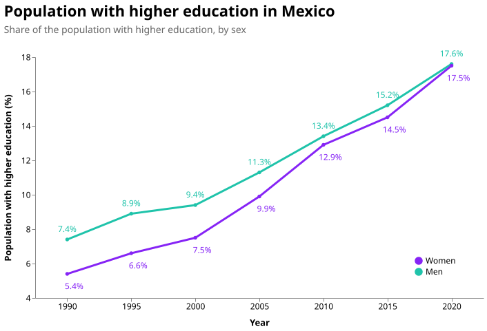
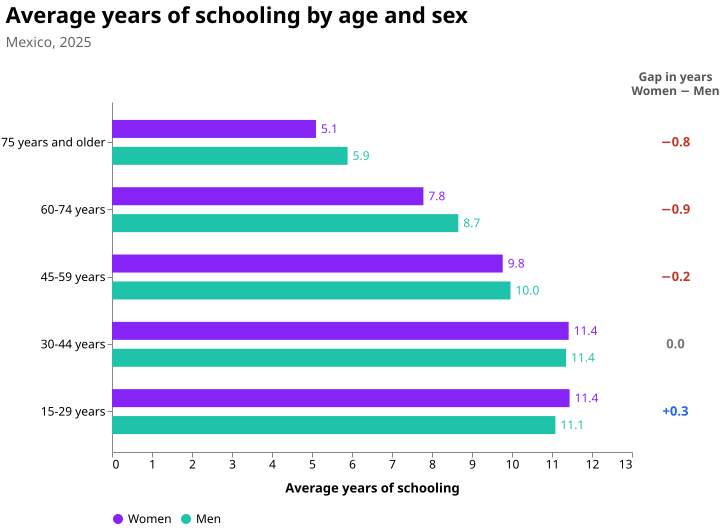
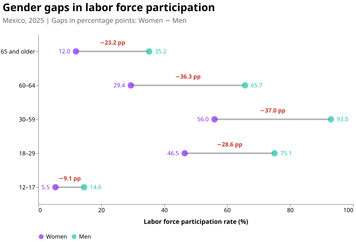
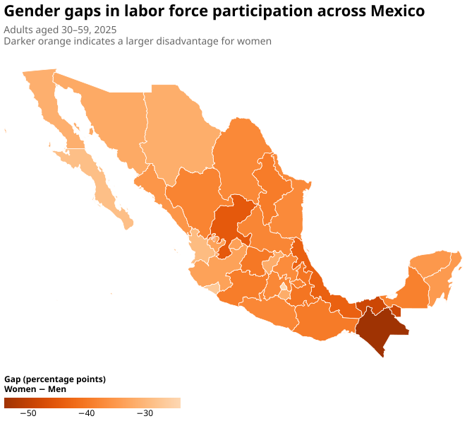
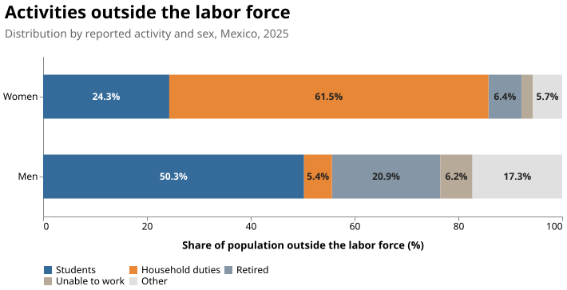
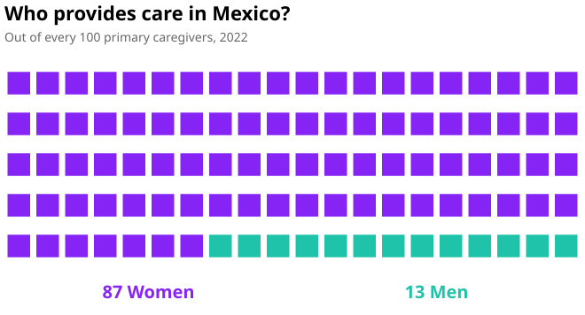
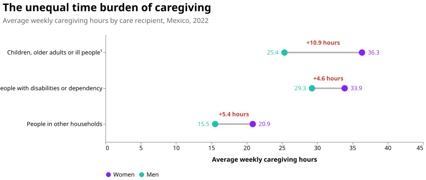
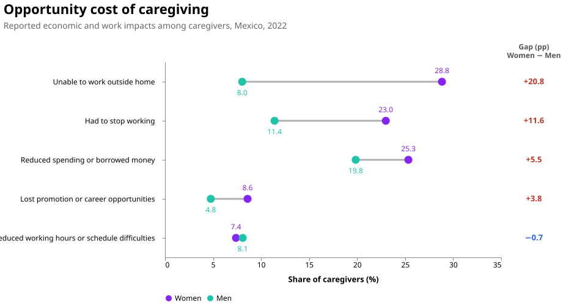
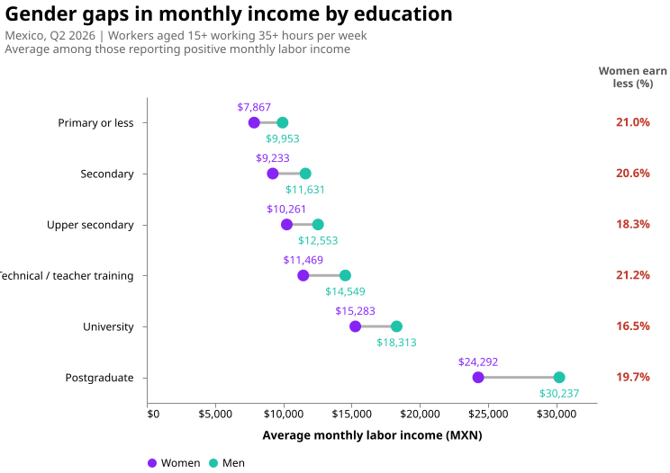
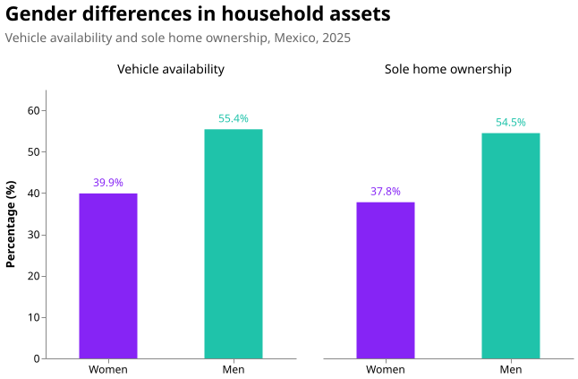

Mexico · Education · Economic opportunity
How far has Mexico come
toward gender equality?
Women have made gains in education.
Equality at home and work remains a distant goal.
This story moves from the classroom to the workplace and the household, tracing educational progress alongside persistent inequalities in work, care, and economic resources.
It brings together a historical education series and snapshots from different years to explore how these dimensions of inequality connect.
01 / Education
A gap that has nearly closed
Between 1990 and 2020, the share of women with higher education increased from 5.4% to 17.5%. For men, it rose from 7.4% to 17.6%. The difference narrowed from 2.0 to 0.1 percentage points.

A different picture across generations
Older women average fewer years of schooling than men of the same age. Among those aged 15–29, women hold a small advantage.

02 / Work
Educational progress coexists with unequal labor force participation
Men’s labor force participation exceeds women’s in every age group shown. Among adults aged 30–59, the rates are 93.0% for men and 56.0% for women.

Geography adds another dimension
The national gender gap is far from uniform across Mexico. The map reveals substantial differences in labor force participation between women and men aged 30–59 across states. These disparities are particularly pronounced in southern Mexico, where women's participation in the labor force is significantly lower. Notably, these states are also among the poorest in the country, highlighting the intersection between gender inequality and regional economic disparities.

Outside the labor force, activities differ sharply
Among those who report being outside the labor force, the story looks very different for women and men. Traditional gender roles remain evident: 61.5% of women in this situation report household duties as their main activity, compared with just 5.4% of men. In contrast, 50.3% of men outside the labor force are students, compared with 24.3% of women. These differences highlight how gender continues to shape what women and men do outside the labor market, with domestic responsibilities falling disproportionately on women.

These percentages do not describe how many women and men study overall. They describe different populations outside the labor force—and bring domestic responsibilities into the story.
03 / Care
Who provides care—and at what cost?
In 2022, approximately 87 out of every 100 primary caregivers were women. The distribution of care is unequal in both the people involved and the time they contribute.

Women report more caregiving hours
Among people providing care to children, older adults, or temporarily ill members of their own household, women average 36.3 hours per week and men 25.4—a difference of 10.9 hours. Women also report more hours in the other recipient groups shown.

The opportunity cost of caregiving
Reported impacts connect care with economic constraints. Among the caregivers represented below, 28.8% of women report being unable to work outside the home, compared with 8.0% of men. Another 23.0% of women report having stopped working, compared with 11.4% of men.
Women also report higher shares of financial difficulties and lost career opportunities. Men report a slightly higher share of reduced working hours or scheduling difficulties.

04 / Income & assets
More schooling, persistent income differences
In the second quarter of 2026, women earned less than men across every education level in Mexico, even among workers aged 15 and older working at least 35 hours per week and reporting positive income.
The largest gender income gaps are found among workers with technical or teacher training (21.2%), primary education or less (21.0%), and secondary education (20.6%). Although average earnings increase with educational attainment for both women and men, the gender gap persists even at the highest levels of education, reaching 19.7% among postgraduate workers.
These findings suggest that while education is associated with higher earnings, it does not eliminate gender disparities in labor income.

What this income comparison captures
Positive income amounts are available for approximately 48–74% of each education–sex group, with lower coverage at university and postgraduate levels. The estimates describe workers reporting those amounts.
Monthly income differences also reflect hours, occupations, experience, and other characteristics. They are not estimates of unequal pay for identical work.
Access to resources extends beyond earnings
Vehicle availability is 15.5 percentage points higher in households with a male reference person. This measures household access, rather than individual vehicle ownership. The separate housing indicator shows a 16.7 percentage point gap in sole ownership between men and women.

Looking across the evidence
Education is part of the story.
Educational opportunities have changed substantially across generations. Progress in schooling now coexists with persistent gaps in participation, caregiving time, reported economic impacts, earnings, and access to resources.
These data do not establish a single explanation. They show why understanding women’s economic opportunities requires looking across the classroom, the workplace, and the household.
About the analysis
Sources & methods
The article combines separate datasets and reference years. Only the 1990–2020 higher education chart presents a historical series. Age comparisons describe different groups at one point in time. Indicators with different populations or denominators should not be compared as if they measured the same outcome.
- INEGI: SIESVIM and 2025 tabulations with a gender perspective . Education, participation, activities outside the labor force, and household assets. Table references appear under each figure.
- INEGI: ENASIC 2022 . Primary caregivers, weekly care hours, and reported impacts.
- INEGI: ENOE, Q2 2026 . Income calculations use the SDEM file, quarterly expansion weights, and reported monthly labor income.
- Mexico GeoJSON . State boundaries used for the participation map.
Income calculation
The sample retains completed interviews, current residents, occupied people aged 15+, valid education and sex categories, positive quarterly weights, weekly hours of 35–168, and positive reported monthly income. Weighted means are calculated separately by education and sex using INEGI’s quarterly expansion factor. Differences are descriptive; no significance tests or causal estimates are presented.